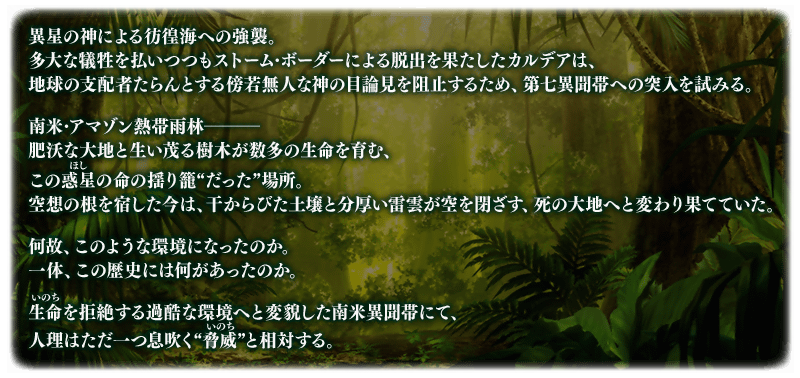
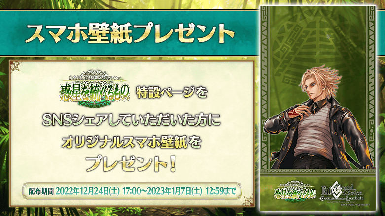

◆第2部 第7章「Lostbelt No.7 黃金樹海紀行 冥界紀元 統御星球的存在」(前篇)開幕◆
異文帶之中也是最大級的秘境舞台，故事正向高潮加速邁進。
敬請期待「黃金樹海紀行 冥界紀元 統御星球的存在」！
還有，第2部 第7章「Lostbelt No.7 黃金樹海紀行 冥界紀元 統御星球的存在」(後篇)也預定公開。關於詳情敬請期待續報。
◆公開時間◆
2022年12月25日(日) 17:00～
◆開放條件◆
通過「非靈長生存圏 通古斯卡聖域」的後記(エピローグ)後開放。
※「非靈長生存圏 通古斯卡聖域」的序幕(プロローグ)及後記(エピローグ)以外的關卡，開放主線分支的話才能遊玩。詳情請確認此處。
※不需要通過亞種特異點(從Ⅰ到Ⅳ)、主線關卡第2部 第5.5章、第2部 第6.5章。
◆注意◆
第2部 第7章「Lostbelt No.7 黃金樹海紀行 冥界紀元 統御星球的存在」的開放條件為通過「非靈長生存圏 通古斯卡聖域」的後記(エピローグ)，但由於本章相當於第2部 第6.5章「死想顯現界域 如夢似幻 某幻想的生與死」之後的劇情，包含有關第2部 第6.5章內容的一部份劇透。
※本頁面皆為開發中圖片。會有與實際圖片相異的情況。
介紹第2部 第7章「Lostbelt No.7 黃金樹海紀行 冥界紀元 統御星球的存在」(前篇)的電視廣告！
動畫製作：ドライブ
※2022年12月25日(日) 17:00～2023年1月31日(二) 22:59的期間中，在最初起動程式時會播放第2部 第7章「Lostbelt No.7 黃金樹海紀行 冥界紀元 統御星球的存在」的廣告影片。 ※期間中，第2部 第7章「Lostbelt No.7 黃金樹海紀行 冥界紀元 統御星球的存在」的廣告影片會登錄到個人空間(マイルーム)的圖鑑(マテリアル)，在期間結束後後刪除。
第2部 第7章「Lostbelt No.7 黃金樹海紀行 冥界紀元 統御星球的存在」(前篇)追加2種新道具！
是新登場從者的技能強化及靈基再臨必要的道具。
主要能從在第2部 第7章「Lostbelt No.7 黃金樹海紀行 冥界紀元 統御星球的存在」(前篇)主線關卡出現的敵人做為戰利品和關卡通過報酬。
※第2部 第7章「Lostbelt No.7 黃金樹海紀行 冥界紀元 統御星球的存在」的自由關卡將在通過所有預定日後追加的剩餘主線關卡後開放。
在第2部 第7章「Lostbelt No.7 黃金樹海紀行 冥界紀元 統御星球的存在」(前篇)的特設頁面，智慧型手機用桌面的贈送實施中！
在社群媒體分享特設頁面就能下載，請務必使用。
◆配發期間◆
2022年12月24日(六) 16:00～2023年1月7日(六) 11:59
◆特設頁面◆
https://www.fate-go.jp/special/2022-nahui-mictlan/
